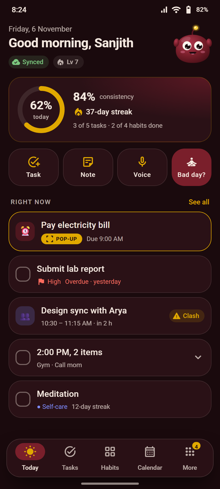

<!doctype html>
<html lang="en">
<head>
<meta charset="utf-8">
<title>BetterLife UI design reference</title>
<link rel="stylesheet" href="prototype/fonts.css">
<link rel="stylesheet" href="prototype/styles.css">
<script src="prototype/core.js"></script>
<script src="prototype/screens-core.js"></script>
<script src="prototype/screens-plan.js"></script>
<script src="prototype/screens-life.js"></script>
<script src="annotations.js"></script>
<style>
  @page { size: A4; margin: 0; }
  html, body { background: var(--bg); -webkit-print-color-adjust: exact; print-color-adjust: exact; }
  .page:last-child { page-break-after: auto; }
  .page { width: 210mm; height: 297mm; padding: 12mm 12mm 10mm; position: relative; overflow: hidden; page-break-after: always; display: flex; flex-direction: column; background: var(--bg); }
  .ph { display: flex; justify-content: space-between; align-items: baseline; border-bottom: 1px solid var(--border); padding-bottom: 3mm; margin-bottom: 5mm; }
  .ph .k { font-size: 10px; letter-spacing: 2px; color: var(--yellow); font-weight: 700; text-transform: uppercase; }
  .ph h2 { font-size: 22px; font-weight: 700; letter-spacing: -.3px; }
  .pf { position: absolute; left: 12mm; right: 12mm; bottom: 6mm; display: flex; justify-content: space-between; font-size: 9px; color: var(--faint); }
  .sh { flex: 1; display: grid; grid-template-columns: 1fr 1fr; gap: 6mm; }
  .sc { display: flex; flex-direction: column; min-height: 0; }
  .sc img { width: 100%; border-radius: 16px; border: 1px solid rgba(245,233,224,.16); display: block; }
  .sc .lbl { display: flex; align-items: center; gap: 6px; margin: 3mm 0 1.5mm; }
  .sc .lbl b { font-size: 13.5px; } .pp { font-size: 9.5px; font-weight: 700; color: var(--bg); background: var(--yellow); border-radius: 6px; padding: 1px 6px; white-space: nowrap; }
  .sc .id { font-family: 'Roboto Mono'; font-size: 9px; color: var(--faint); }
  .sc p, .sc li { font-size: 9.6px; line-height: 13px; color: var(--muted); }
  .sc ul { padding-left: 12px; margin-top: 1mm; } .sc .mo { margin-top: 1.2mm; color: var(--text); opacity: .9; }
  .sc .mo::before { content: 'Motion  '; color: var(--yellow); font-weight: 700; font-size: 8.5px; letter-spacing: .6px; }
  table { width: 100%; border-collapse: collapse; font-size: 11px; }
  td, th { text-align: left; padding: 6px 8px; border-bottom: 1px solid var(--border); vertical-align: top; }
  th { color: var(--muted); font-weight: 500; font-size: 10px; letter-spacing: 1px; text-transform: uppercase; }
  .sw { width: 100%; height: 26mm; border-radius: 14px; border: 1px solid var(--border); }
  .note { font-size: 11.5px; line-height: 17px; color: var(--muted); }
  .note b { color: var(--text); }
  .strip { display: grid; grid-template-columns: repeat(5, 1fr); gap: 3mm; }
  .strip img { width: 100%; border-radius: 10px; border: 1px solid rgba(245,233,224,.16); display: block; }
  .strip .t { font-family: 'Roboto Mono'; font-size: 9px; color: var(--yellow); margin-top: 1mm; text-align: center; }
  .demo { background: var(--bg); }
  h3 { font-size: 14px; font-weight: 700; margin: 4mm 0 2mm; }
  .k2 { font-size: 9.5px; letter-spacing: 1.5px; color: var(--muted); text-transform: uppercase; font-weight: 500; margin: 3mm 0 1.5mm; }
</style>
</head>
<body><div id="doc"></div>
<script>
'use strict';
const DATE = '6 November 2026';
let pageNo = 0;
const page = (kicker, title, body, extraCls = '') => `<section class="page ${extraCls}">${title ? `<div class="ph"><div><div class="k">${kicker}</div><h2>${title}</h2></div><span class="body-s faint">BetterLife · UI reference</span></div>` : ''}${body}
  <div class="pf"><span>BetterLife UI design reference · v1 · ${DATE}</span><span>${++pageNo}</span></div></section>`;

/* ---------- Cover ---------- */
const cover = page('', '', `<div class="col f1" style="justify-content:center;align-items:flex-start;padding:0 6mm;background:radial-gradient(70% 45% at 85% 25%,rgba(224,168,0,.18),transparent 60%)">
  <div style="margin-left:-10px">${mascot({ size: 200, mood: 'cheering', stage: 2, anim: false })}</div>
  <div class="label-l yellow mt24" style="letter-spacing:4px">BETTERLIFE · ANDROID</div>
  <div style="font-size:54px;line-height:58px;font-weight:900;letter-spacing:-2px;margin-top:6mm">UI design<br>reference</div>
  <p class="body-l muted mt16" style="max-width:140mm">Every screen of the app, drawn with the project's own theme tokens: navigation, skeleton loading, motion and empty / error states. Built from the 30 playbook prompts and context.md.</p>
  <div class="row g8 mt24 wrap">${['66 screens', '7 motion studies (35 frames)', 'Design tokens', 'Components', 'Mascot moods & stages'].map(t => `<span class="chip pill">${t}</span>`).join('')}</div>
  <div class="card mt24" style="max-width:150mm"><div class="label-m yellow">FOR THE AI BUILDING THE APP</div>
  <p class="body-s muted mt8">Use this as the visual target when a prompt builds a screen. context.md and agent.md still win on behaviour. Colours, radii and spacing map to <span class="mono">ui/theme</span> (Color.kt, Shape.kt, Dimens.kt); values marked <b class="yellow">proposed</b> are not in the theme yet and must be added there as tokens, never hard-coded. The live, clickable prototype is <span class="mono">docs/design/prototype/index.html</span>.</p></div></div>`);

/* ---------- Contents ---------- */
const groups = {};
ORDER.forEach(id => (groups[SCREENS[id].group] ||= []).push(SCREENS[id]));
const contents = page('Start here', 'Contents & how to use', `
  <div class="row g24" style="align-items:flex-start">
  <div class="f1"><h3>Foundations</h3><table>${['Colour tokens', 'Type, shape & spacing', 'Components', 'Navigation', 'Motion system', 'Motion studies (frame strips)', 'Skeleton loading', 'Mascot: moods and stages'].map(t => `<tr><td>${t}</td></tr>`).join('')}</table>
  <h3>Screens</h3><table>${Object.entries(groups).map(([g, l]) => `<tr><td>${g}</td><td class="muted">${l.length}</td></tr>`).join('')}</table></div>
  <div class="f1 note"><h3 style="color:var(--text)">Rules that apply to every screen</h3>
  <p>• <b>Dark / AMOLED only.</b> Background <span class="mono">#1A0A0D</span>, cards <span class="mono">#2A1116</span> with a 1 dp border at 12% text.</p>
  <p class="mt8">• <b>Never colour alone.</b> Priority = flag + word; status = icon + word; habit boxes = colour + check mark.</p>
  <p class="mt8">• <b>Rounded everything.</b> Cards 24 dp, sheets 28 dp, pop-up 32 dp, buttons fully round, chips 10 dp.</p>
  <p class="mt8">• <b>Touch targets ≥ 48 dp.</b> Primary actions 48–56 dp tall.</p>
  <p class="mt8">• <b>Every list has three extra states:</b> skeleton (same geometry), empty (mascot + line + one action), error (what happened, data is safe, one fix).</p>
  <p class="mt8">• <b>Motion everywhere, but optional.</b> Each animation has a reduced-motion version (system animation scale 0 → fades of 1 frame).</p>
  <p class="mt8">• <b>Edge-to-edge.</b> Content runs under the status bar and gesture bar with correct insets; the floating nav sits above the gesture area.</p>
  <p class="mt8">• <b>Names come from data.</b> "Sanjith", "Blip" and all items here are sample data.</p>
  <h3 style="color:var(--text)">Reading a screen page</h3>
  <p>Each screen shows the frame, its prototype id (<span class="mono">?s=id</span>), the playbook prompt(s) that build it, its purpose, the layout from top to bottom and the motion.</p></div></div>`);

/* ---------- Colours ---------- */
const sw = (hex, name, tok, prop) => `<div><div class="sw" style="background:${hex}"></div><div class="title-s mt4">${name}${prop ? ' <span class="pp" style="background:var(--cherry);color:var(--text)">proposed</span>' : ''}</div><div class="mono body-s faint">${tok}</div><div class="mono body-s muted">${hex}</div></div>`;
const colours = page('Foundations', 'Colour tokens', `
  <div class="k2">Theme (ui/theme/Color.kt)</div>
  <div style="display:grid;grid-template-columns:repeat(5,1fr);gap:4mm">${sw('#1A0A0D', 'Background', 'Background')}${sw('#2A1116', 'Surface', 'Surface')}${sw('#7A1F2B', 'Cherry', 'Cherry / secondary')}${sw('#E0A800', 'Accent yellow', 'AccentYellow / primary')}${sw('#F5E9E0', 'Text', 'Text')}
  ${sw('rgba(245,233,224,.72)', 'Text muted', 'TextMuted 72%')}${sw('rgba(245,233,224,.12)', 'Soft border', 'SoftBorder 12%')}${sw('#7BC67E', 'Good', 'StatusGood')}${sw('#FF6B5E', 'Bad', 'StatusBad')}${sw('rgba(26,10,13,.82)', 'Scrim', 'Scrim 82%')}</div>
  <div class="k2 mt16">Category palette (CategoryPalette, used for events, habits, projects)</div>
  <div style="display:grid;grid-template-columns:repeat(8,1fr);gap:3mm">${['#FF6B5E', '#E0A800', '#7BC67E', '#5EC4D6', '#7E8CFF', '#C77DFF', '#FF8FB8', '#B0A49C'].map((c, i) => `<div><div class="sw" style="height:16mm;background:${c}"></div><div class="mono body-s muted mt4">${c}</div></div>`).join('')}</div>
  <div class="k2 mt16">Proposed additions (add to Color.kt before use)</div>
  <div style="display:grid;grid-template-columns:repeat(5,1fr);gap:4mm">${sw('#36161D', 'Surface raised', 'SurfaceRaised', 1)}${sw('#210C10', 'Surface sunk', 'SurfaceSunk', 1)}${sw('rgba(122,31,43,.45)', 'Cherry soft', 'Cherry 45%', 1)}${sw('rgba(224,168,0,.16)', 'Yellow soft', 'AccentYellow 16%', 1)}${sw('rgba(245,233,224,.45)', 'Text faint', 'Text 45%', 1)}</div>
  <div class="card mt16 note"><b>Usage.</b> Yellow is for the one main action, today markers, focus and "top" items. Cherry is selection (tabs, chips, nav pill) and secondary buttons. Tints of category colours are 15–20% fills with a 3–4 dp solid stripe. Yellow text on Cherry passes contrast only at 14 sp bold or larger: use Text on Cherry for small labels.</div>`);

/* ---------- Type / shape / spacing ---------- */
const typeRows = [['displaySmall', 'display-s', '36 / 44', 'Pop-up time, big numbers'], ['headlineMedium', 'headline-m', '28 / 36', 'Onboarding titles'], ['headlineSmall', 'headline-s', '24 / 32', 'Greeting, screen heroes'], ['titleLarge', 'title-l', '22 / 28', 'App bar titles, stat values'], ['titleMedium', 'title-m', '16 / 24 · 500', 'Card and row titles'], ['titleSmall', 'title-s', '14 / 20 · 500', 'Dense row titles'], ['bodyLarge', 'body-l', '16 / 24', 'Note and journal text'], ['bodyMedium', 'body-m', '14 / 20', 'Body'], ['bodySmall', 'body-s', '12 / 16', 'Meta lines (due, project)'], ['labelMedium', 'label-m', '12 / 16 · 500', 'Section labels (UPPERCASE, +1.2 tracking)']];
const typeShape = page('Foundations', 'Type, shape & spacing', `
  <div class="k2">Material 3 default type scale (Roboto) · weights 700/900 used for heroes</div>
  <table>${typeRows.map(([n, c, s, u]) => `<tr><td class="mono body-s muted" style="width:32mm">${n}</td><td><span class="${c}">Good morning</span></td><td class="mono body-s muted" style="width:26mm">${s}</td><td class="body-s muted" style="width:52mm">${u}</td></tr>`).join('')}</table>
  <div class="row g24 mt16" style="align-items:flex-start"><div class="f1"><div class="k2">Shapes (Shape.kt)</div><div class="row g12 wrap">${[['12', 'extraSmall', 'chips, small tiles'], ['16', 'small', 'fields, icon tiles'], ['20', 'medium', 'speech bubbles'], ['24', 'large', 'cards'], ['28', 'extraLarge', 'sheets, dialogs'], ['32', 'pop-up', 'reminder card (proposed)']].map(([r, n, u]) => `<div class="tc"><div style="width:24mm;height:16mm;border:1.5px solid var(--yellow);border-radius:${r}px;background:var(--surface)"></div><div class="label-m mt4">${r} dp</div><div class="body-s faint">${n}</div><div class="body-s muted" style="width:24mm">${u}</div></div>`).join('')}</div></div></div>
  <div class="row g24 mt16" style="align-items:flex-start"><div class="f1"><div class="k2">Spacing (Spacing in Dimens.kt)</div>${[['xs', 4], ['sm', 8], ['md', 16], ['lg', 24], ['xl', 32]].map(([n, v]) => `<div class="row g12 mt4"><span class="mono body-s" style="width:12mm">${n}</span><i style="display:block;height:10px;width:${v * 2}px;background:var(--cherry);border-radius:3px"></i><span class="body-s muted">${v} dp</span></div>`).join('')}
  <p class="note mt12">Screen gutters 16 dp. Gap between cards 8 dp; between sections 20–24 dp. Card padding 16 dp (12 dp for dense rows).</p></div>
  <div class="f1"><div class="k2">Sizes (Dimens.kt + proposed)</div><table>${[['Touch target', '48 dp'], ['Icon / small icon', '24 / 16 dp'], ['Border', '1 dp'], ['App bar', '64 dp'], ['Bottom nav (floating)', '72 dp, 12 dp side inset, 22 dp above gesture bar'], ['Primary button', '48 dp (56 on pop-up)'], ['FAB', '60 dp, radius 20'], ['Habit box', '11 per row, radius 7, gap 5'], ['Pop-up max width', '480 dp']].map(([a, b]) => `<tr><td class="body-s">${a}</td><td class="body-s muted">${b}</td></tr>`).join('')}</table></div></div>`);

/* ---------- Components ---------- */
const comps = page('Foundations', 'Components', `
  <div class="k2">Buttons</div><div class="row g8 wrap"><a class="btn primary">${ic('check')}Primary</a><a class="btn tonal">${ic('snooze')}Tonal (Cherry)</a><a class="btn outline">Outline</a><a class="btn text">Text</a><a class="btn primary sm">Small</a></div>
  <div class="k2">Chips & badges</div><div class="row g8 wrap"><span class="chip">Filter</span><span class="chip sel">Selected</span><span class="chip y">${ic('event')}Parsed date</span><span class="chip warn">${ic('info')}Warning</span><span class="chip pill">Pill</span><span class="tag">#tag</span><span class="lvl full">${icf('fullscreen', 'sm')}POP-UP</span><span class="lvl alarm">${icf('alarm', 'sm')}ALARM</span><span class="lvl normal">Notification</span></div>
  <div class="k2">Status chips (icon + word)</div><div class="row g8 wrap"><span class="status g">${icf('check_circle')}Allowed</span><span class="status y">${icf('warning')}Clash</span><span class="status r">${icf('cancel')}Needed</span><span class="status n">${icf('pause_circle')}Held</span><span class="bad body-s row g4">${icf('flag', 'sm')}High</span><span class="yellow body-s row g4">${icf('flag', 'sm')}Medium</span><span class="good body-s row g4">${icf('flag', 'sm')}Low</span></div>
  <div class="row g16" style="align-items:flex-start"><div class="f1"><div class="k2">Segmented tabs</div><div class="tabs" style="margin:0"><span class="tab on">Today<span class="n">5</span></span><span class="tab">Upcoming<span class="n">12</span></span><span class="tab">Inbox</span></div>
  <div class="k2">Ticks, switch, field</div><div class="row g12"><span class="tick"></span><span class="tick on">${ic('check')}</span><span class="tick round on">${ic('check')}</span><span class="switch"></span><span class="switch on"></span></div>
  <div class="field focus mt12" style="background:var(--bg)"><span class="lbl">Title</span><span class="v">Focused field</span></div></div>
  <div class="f1"><div class="k2">Habit box states</div><div class="row g8 wrap">${[['done', 'background:#FF6B5E', icf('check')], ['kept', 'background:#7E8CFF99', icf('check'), 'done kept'], ['today', '', '', 'today'], ['empty', '', ''], ['future', '', '', 'future'], ['paused', '', '', 'paused'], ['n/a', '', '', 'void']].map(([n, s, inner, c]) => `<div class="tc"><span class="hbox ${c || n}" style="width:30px;${s}">${inner}</span><div class="body-s faint mt4">${n}</div></div>`).join('')}</div>
  <div class="k2">Progress</div><div class="row g16">${ring(68, 64, 7, 'var(--yellow)', '<b>68%</b>')}<div class="f1"><div class="bar"><i style="width:68%"></i></div><div class="sk mt12" style="height:14px;width:80%"></div><div class="sk mt8" style="height:10px;width:50%"></div></div></div></div></div>
  <div class="k2">Cards</div><div class="row g8" style="align-items:stretch"><div class="f1">${taskRow(0, { title: 'Submit lab report', pr: 'High', due: '11:59 PM', proj: 'Uni', top: true })}</div><div class="f1">${todayRow(0, { icon: '👥', title: 'Design sync', color: 'rgba(126,140,255,.2)', meta: '10:30 AM', chip: `<span class="status y">${icf('warning')}Clash</span>` })}</div></div>
  <div class="k2">Feedback</div><div style="position:relative;height:60px"><div class="snackbar" style="position:absolute;bottom:0;left:0;right:50%">Task completed<span class="act">Undo</span></div><div class="toast" style="position:absolute;top:8px;left:75%">${icf('check_circle', 'good')}Saved to Inbox</div></div>`);

/* ---------- Navigation ---------- */
const nav = page('Foundations', 'Navigation', `
  <div class="row g24" style="align-items:flex-start"><div style="width:85mm"></div>
  <div class="f1 note"><h3 style="color:var(--text)">Floating bottom bar (Prompt 17)</h3>
  <p>Five destinations: <b>Today · Tasks · Habits · Calendar · More</b>. Floating card 72 dp tall, radius 26, 12 dp side inset, 92% Surface with blur and a soft shadow, sitting above the gesture bar. Active item: Cherry pill 56×32 behind a filled yellow icon, label in Text. Inactive: outlined icon, muted label.</p>
  <p class="mt8">Badge on <b>More</b> = unprocessed Inbox count (yellow, 2 dp ring in Surface). A red "!" on the Health tile when a Reminder Health row is red.</p>
  <p class="mt8"><b>Motion:</b> on select the pill springs from 40% width (400 ms, overshoot) and the icon fills. Destination content cross-fades 250 ms; it never slides between tabs.</p>
  <h3 style="color:var(--text)">Hierarchy</h3>
  <table><tr><th>Tab</th><th>Opens</th></tr>
  <tr><td>Today</td><td class="muted">Minimum Day, Comeback, Pause sheet, check-in</td></tr>
  <tr><td>Tasks</td><td class="muted">Task editor, Projects, Search</td></tr>
  <tr><td>Habits</td><td class="muted">Habit detail, editor, celebrations</td></tr>
  <tr><td>Calendar</td><td class="muted">Day · Week · Month · Agenda, event editor, day sheet</td></tr>
  <tr><td>More</td><td class="muted">Inbox, Notes, Journal, Body, Photos, Dashboard, Reminder Center, Health, Vault, Trash, Backup, Sync, Settings</td></tr></table>
  <h3 style="color:var(--text)">Screen transitions</h3>
  <p>Push (detail, editor): slide 28 dp from the right + fade, 380 ms emphasized. Full-screen flows (onboarding, Minimum Day, celebrations, recorder): rise 40 dp + fade, 420 ms. Back uses predictive back (Android 16): the screen scales to 90% and follows the gesture. Close (×) flows never also show a Back arrow.</p></div></div>`);

/* ---------- Motion ---------- */
const motion = page('Foundations', 'Motion system', `
  <p class="note">Proposed motion tokens (add as constants next to the theme). All durations scale with the system animator duration scale; at 0 every animation becomes an instant state change and loops stop.</p>
  <table class="mt12"><tr><th>Token</th><th>Value</th><th>Used for</th></tr>
  ${[['durationShort', '150 ms', 'Colour, state layers, icon fill'], ['durationMedium', '250 ms', 'Cross-fades, switches, list item removal'], ['durationLong', '400 ms', 'Sheets, nav pill, screen push'], ['durationXL', '600 ms', 'Progress bars'], ['easeEmphasized', 'cubic-bezier(.2, 0, 0, 1)', 'Screens, sheets, rings'], ['easeBounce', 'cubic-bezier(.34, 1.56, .64, 1) / spring(dampingRatio 0.6, stiffness ~400)', 'Cards in, pops, ticks, pop-up card'], ['staggerStep', '60 ms (cards), 40 ms (chips)', 'Lists entering']].map(r => `<tr><td class="mono body-s">${r[0]}</td><td class="body-s">${r[1]}</td><td class="body-s muted">${r[2]}</td></tr>`).join('')}</table>
  <table class="mt16"><tr><th>Pattern</th><th>Spec</th><th>Reduced motion</th></tr>
  ${[['Card enter', 'translateY 18 dp + scale 0.97 → 1, fade, 520 ms bounce, 60 ms stagger (first 8 only)', 'fade 1 frame'],
     ['Tick (task / habit)', 'scale 0.6 → 1.18 → 1, fill colour, check draws, haptic CONFIRM; task row strikes through then collapses 250 ms', 'instant fill'],
     ['Progress ring', 'sweep from 0, 1.1 s emphasized; re-animates only on value change', 'final value'],
     ['Reminder pop-up', 'scrim 300 ms; card scale 0.82 → 1 + rise 24 dp, 520 ms bounce; 700 ms tap guard shown as a filling bar', 'fade 150 ms'],
     ['Bottom sheet', 'slide up 420 ms emphasized, scrim fade 300 ms; drag to dismiss follows the finger', 'appear'],
     ['Snackbar', 'spring up 360 ms; 6 s timer line shrinks; Undo restores with the reverse animation', 'appear'],
     ['Skeleton', 'warm shimmer band, 1.3 s loop, left → right; content cross-fades in 250 ms', 'static blocks'],
     ['Celebration', 'confetti (≈46 pieces, 2.4–4.4 s fall), glow pop, number pop, text stagger', 'mascot + text only'],
     ['Mascot idle', 'breathe 3.2 s, blink every 4 s, bulb glow 2.2 s; cheering hops 0.9 s and waves', 'static pose'],
     ['Charts', 'line draws 1.4 s; bars grow from baseline with overshoot, 50 ms stagger', 'final chart']].map(r => `<tr><td class="body-s" style="width:32mm"><b>${r[0]}</b></td><td class="body-s muted">${r[1]}</td><td class="body-s faint" style="width:30mm">${r[2]}</td></tr>`).join('')}</table>
  <div class="card tight mt16 note">Compose mapping: <span class="mono">spring()</span> for bounce, <span class="mono">tween(…, FastOutSlowInEasing)</span> or <span class="mono">CubicBezierEasing(.2f,0f,0f,1f)</span> for emphasized, <span class="mono">AnimatedVisibility</span> + <span class="mono">animateItem()</span> for lists, Canvas for grids, heatmaps, charts and confetti. Check <span class="mono">Settings.Global.ANIMATOR_DURATION_SCALE</span> (already read by core/MotionSettings.kt).</div>`);

/* ---------- Motion studies ---------- */
const strips = [
  ['Reminder pop-up entrance', 'popup', [0, 90, 180, 300, 700], 'Scrim fades, card scales up with overshoot, mascot pops, tap-guard bar fills before buttons work.'],
  ['Cards bounce in (Today)', 'today', [0, 120, 240, 400, 900], 'Greeting first, then cards rise and settle 60 ms apart; ring sweeps.'],
  ['Bottom sheet', 'today-pause-sheet', [0, 80, 160, 260, 500], 'Scrim + sheet slide; duration chips pop in after the sheet lands.'],
  ['Habit tick + snackbar', 'habits', [250, 330, 410, 520, 800], 'Today box pops 0.6 → 1.18 → 1 and fills; Undo snackbar springs up.'],
  ['Skeleton shimmer', 'today-loading', [100, 400, 700, 1000, 1300], 'One warm band sweeps every 1.3 s across all blocks at once.'],
  ['Celebration', 'celebration', [0, 150, 350, 700, 1600], 'Glow, mascot, number pop in sequence; confetti keeps falling.'],
  ['Quick-add chips', 'tasks-quickadd', [300, 380, 460, 560, 900], 'Preview chips pop in as the parser recognises each part.'],
];
const stripHtml = ([t, id, ts, d]) => `<div class="mt8"><div class="row between"><span class="title-s">${t}</span><span class="mono body-s faint">?s=${id}&amp;t=…</span></div><p class="body-s muted mb8">${d}</p>
  <div class="strip">${ts.map(x => `<div><div class="t">${x} ms</div></div>`).join('')}</div></div>`;
const studies = [0, 2, 4, 6].map((s, i) => page('Foundations', `Motion studies ${i + 1}/4`, strips.slice(s, s + 2).map(stripHtml).join('<div style="height:6mm"></div>')));

/* ---------- Skeleton ---------- */
const skel = page('Foundations', 'Skeleton loading', `
  <div class="sh" style="flex:none;grid-template-columns:1fr 1fr 1fr;gap:4mm">${[['today-loading', 'Today'], ['tasks-loading', 'Tasks'], ['habits-loading', 'Habits']].map(([id, n]) => `<div class="sc"><div class="lbl"><b>${n}</b><span class="id">?s=${id}</span></div></div>`).join('')}</div>
  <div class="note mt8"><p>• Skeletons copy the <b>exact geometry</b> of the loaded content (same card padding, heights, radii) so nothing jumps when data arrives.</p>
  <p>• Only content is skeletoned. App bar, tabs, nav bar and FAB are real and usable at once.</p>
  <p>• Blocks are Text at 7% on the card surface; a single warm shimmer band (Text 9% → Yellow 6%) sweeps every 1.3 s.</p>
  <p>• Show a skeleton only if loading takes longer than ~150 ms (Room is usually faster); never show a spinner for local data.</p>
  <p>• Swap to content with a 250 ms cross-fade, then the normal card-enter stagger. Reduced motion: no shimmer, instant swap.</p></div>`);

/* ---------- Mascot ---------- */
const masc = page('Foundations', 'Mascot: Blip', `
  <p class="note">Round maroon alien blob, big glossy eyes, stubby arms, one antenna with a glowing yellow bulb (the mood light). Drawn with Compose Canvas (no Lottie). Mood reflects only the last 24–72 hours; stage never goes down.</p>
  <div class="k2 mt12">Moods</div><div class="row between">${['cheering', 'proud', 'curious', 'sleepy', 'disappointed'].map(m => `<div class="card tight tc" style="width:33mm">${mascot({ size: 92, mood: m, anim: false })}<div class="title-s mt4">${m[0].toUpperCase() + m.slice(1)}</div></div>`).join('')}</div>
  <table class="mt8">${[['Cheering', 'Arms up and waving, open grin, hops (0.9 s). Habits / tasks done, celebrations.'], ['Proud', 'Happy closed eyes, arms on hips, gentle hop. Report card, Minimum Day.'], ['Curious', 'Idle: breathes, blinks every 4 s, small "o" mouth. Default, pop-ups.'], ['Sleepy', 'Closed eyes, bulb dim, floating "z". Late night, app lock, paused days.'], ['Down', 'Sits lower, eyes look down, bulb dim, small frown. Never shows blaming text; perks up the moment something is done.']].map(([a, b]) => `<tr><td class="title-s" style="width:24mm">${a}</td><td class="body-s muted">${b}</td></tr>`).join('')}</table>
  <div class="k2 mt12">Evolution stages (from total consistent days)</div><div class="row between" style="align-items:flex-end">${[[1, 'Pod'], [2, 'Baby'], [3, 'Teen'], [4, 'Adult'], [5, 'Legend']].map(([s, n]) => `<div class="tc">${mascot({ size: 60 + s * 10, mood: s === 1 ? 'curious' : 'proud', stage: s, anim: false })}<div class="title-s">${s} · ${n}</div></div>`).join('')}</div>
  <p class="body-s muted mt8">1 glowing pod · 2 baby blob · 3 teen: bigger antenna, small legs · 4 adult: cape and glowing markings · 5 legend: full glow and aura. Thresholds are set in Prompt 27.</p>`);

/* ---------- Screen pages ---------- */
function shotBlock(id) {
  const s = SCREENS[id], n = NOTES[id] || { p: '?', purpose: '', layout: [], motion: '' };
  return `<div class="sc"><div class="lbl"><b>${s.title}</b><span class="pp">P ${n.p}</span></div><div class="id">?s=${id}</div>
    <p class="mt4" style="color:var(--text)">${n.purpose}</p><ul>${n.layout.map(l => `<li>${l}</li>`).join('')}</ul>${n.motion ? `<p class="mo">${n.motion}</p>` : ''}</div>`;
}
const screenPages = [];
Object.entries(groups).forEach(([g, list]) => {
  for (let i = 0; i < list.length; i += 2) {
    const pair = list.slice(i, i + 2);
    screenPages.push(page('Screens · ' + g, pair.map(s => s.title).join('  ·  '), `<div class="sh">${pair.map(s => shotBlock(s.id)).join('')}${pair.length === 1 ? '<div></div>' : ''}</div>`));
  }
});

document.getElementById('doc').innerHTML = [cover, contents, colours, typeShape, comps, nav, motion, ...studies, skel, masc, ...screenPages].join('');
const only = new URLSearchParams(location.search).get('page');
if (only) document.querySelectorAll('.page').forEach((p, i) => { if (i + 1 !== Number(only)) p.style.display = 'none'; });
// Self-check used when building the PDF: pages whose content overflows the A4 box.
document.body.dataset.overflow = [...document.querySelectorAll('.page')].map((p, i) => p.scrollHeight - p.clientHeight > 2 ? i + 1 : 0).filter(Boolean).join(',');
document.fonts.ready.then(() => { document.body.dataset.ready = '1'; });
</script>
</body>
</html>
